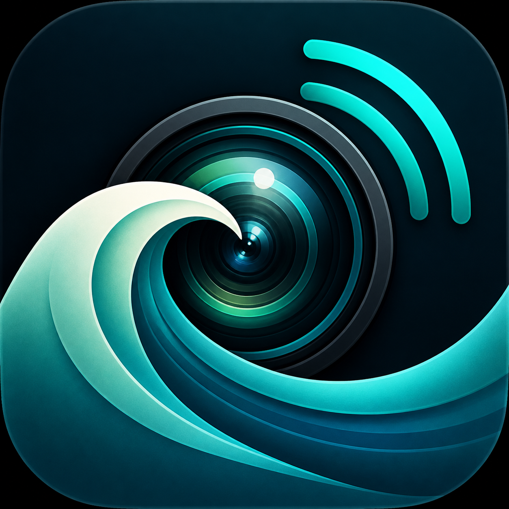
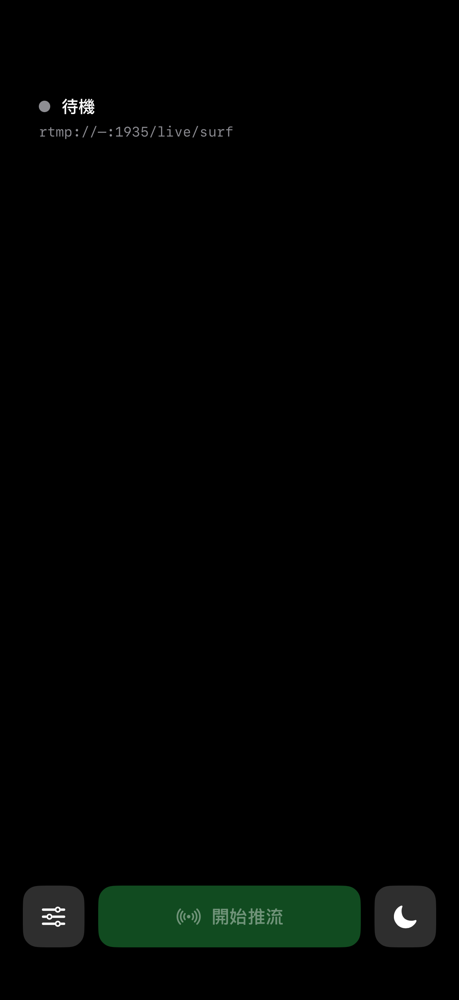

Operator controlled
Choose a discovered listener or enter an endpoint manually, then start and stop the stream explicitly.

iOS 17+ · Same-network RTMP
Stream the iPhone camera to an RTMP endpoint discovered or entered by the operator on the same local network.
The product mark is a release-draft asset and is not yet integrated into the current build.

Choose a discovered listener or enter an endpoint manually, then start and stop the stream explicitly.
Camera video is required. Microphone audio is optional and disabled by default.
Current RTMP transport is unencrypted and unauthenticated. Use only on a trusted, controlled network.